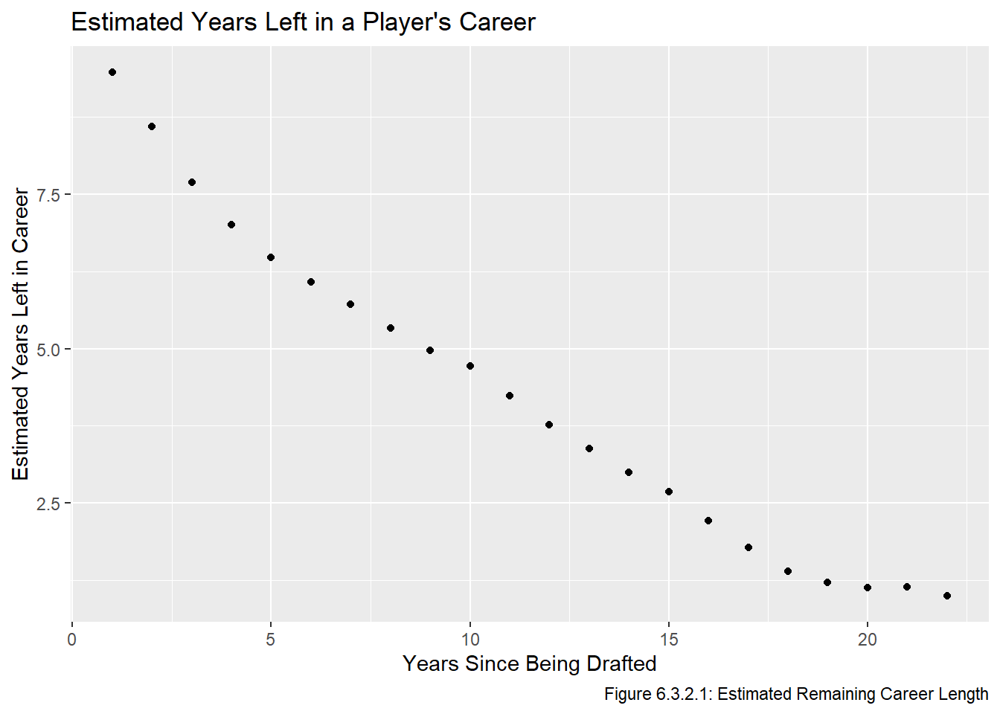

Code
# install.packages("tidyverse")
# install.packages("dplyr")
library(tidyverse)
library(dplyr)
source("functions.R") # load functions defined in prior chapters
all_data <- read.csv("all_data.csv")We install and load the necessary packages, along with functions from prior chapters and all_data.
# install.packages("tidyverse")
# install.packages("dplyr")
library(tidyverse)
library(dplyr)
source("functions.R") # load functions defined in prior chapters
all_data <- read.csv("all_data.csv")In the transform step, we will transform our data to better include the careers of players who are still playing. In the previous chapter, we estimated the value of pick \(n\) by taking the average points share of all players in out dataset drafted at pick \(n\). One problem with this approach is that players drafted more recently will have had fewer years to generate points share. Indeed, the average points share is quite a bit lower for the drafts between 2016 and 2020:
all_data |>
group_by(year) |>
summarize(avg_ps = mean(ps)) |>
ggplot(aes(x = year, y = avg_ps)) +
geom_point()
This will result in older drafts receiving more weight when we take the average, which is unideal because we’d like all drafts to be equally weighted to prevent outliers from receiving more weight than they should. To adjust this, we will change our metric slightly, and will instead use \(p_{ij} = \frac{ps_{ij}}{\sum_i ps_{ij}}\), where \(ps_{ij}\) is the points share of the player picked at selection \(i\) in year \(j\). In other words, we define \(p_{ij}\) to be the percentage of the total points share generated by players drafted in year \(j\) that the player selected at pick \(i\) generated.
The other transformation we will apply to our dataset before the modelling step addresses one of points we mentioned at the very end of the EDA we performed in the Visualize chapter. Specifically, we will apply a weighted \(k\)-nearest neighbour algorithm so that the value of pick \(n\) will be more directly influenced by the historical outcomes of picks “close” to pick \(n\). Note that I learned how to inplemment a weighted \(k\)-nearest neighbour algorithm in STAT341.
all_data_prop <- all_data |>
group_by(year) |>
mutate(prop_ps = ps/sum(ps))
all_data_prop# A tibble: 5,427 × 7
# Groups: year [25]
year overall to pos gp ps prop_ps
<int> <int> <int> <chr> <int> <dbl> <dbl>
1 1996 1 2015 D 1179 64.6 0.0407
2 1996 2 2008 D 496 25.8 0.0163
3 1996 3 2011 RW 822 56.6 0.0357
4 1996 4 2000 C 3 0 0
5 1996 5 2007 D 231 8.8 0.00555
6 1996 6 2009 C 627 12.5 0.00788
7 1996 7 2007 LW/C 545 9.2 0.00580
8 1996 8 2004 D 44 0 0
9 1996 9 2011 D 917 46.9 0.0296
10 1996 10 2004 D 209 2.7 0.00170
# ℹ 5,417 more rowsNote that usually it is not advisable to take the mean of a bunch of ratios because it gives each ratio an equal weight. However, here it is appropriate because we want to give each draft an equal weight. We will recreate the same plot, but note that the only variation will come from the number of selections in a draft (since what we are plotting is literally \(\frac{1}{\text{number of picks in draft}}\)). Additionally, the scale on the \(y\)-axis shows that these values are basically all the same.
all_data_prop |>
group_by(year) |>
summarize(avg_ps = mean(prop_ps)) |>
ggplot(aes(x = year, y = avg_ps)) +
geom_point()
In case this approach is not appropriate, we will still fit a model using the raw ps values in the Model step, it turns out the models will be quite similar.
all_data_prop <- all_data_prop |>
group_by(overall) |>
summarize(avg_prop_ps = mean(prop_ps),
.groups = "drop")
all_data_prop# A tibble: 224 × 2
overall avg_prop_ps
<int> <dbl>
1 1 0.0544
2 2 0.0427
3 3 0.0332
4 4 0.0312
5 5 0.0247
6 6 0.0199
7 7 0.0228
8 8 0.0135
9 9 0.0185
10 10 0.0119
# ℹ 214 more rowsFinally, we utilize a weighted \(k\)-nearest neighbour algorithm which will help smoothen out the plot from the end of the visualization chapter. As a reminder, here is that plot:
all_data_raw <- all_data |>
group_by(overall) |>
summarize(mean_ps = mean(ps))
head(all_data_raw, 10)# A tibble: 10 × 2
overall mean_ps
<int> <dbl>
1 1 96.2
2 2 77.3
3 3 54.3
4 4 50.3
5 5 45.1
6 6 33.9
7 7 39.2
8 8 23.0
9 9 32.7
10 10 17.6ggplot(all_data_raw, aes(x = overall, y = mean_ps)) +
geom_point() +
geom_point(aes(x = 205, y = mean(filter(all_data, overall==205)$ps)), col = "salmon") +
labs(title = "Mean Points Share by Pick Number",
x = "Pick Number", y = "Mean Points Share") +
annotate(geom = "segment", x = 175, y = 37.5, xend = 203, yend = 14, colour = "salmon",
arrow = arrow(type = "open", length = unit(0.32, "cm"))) +
annotate(geom = "label", x = 140, y = 39,
label = "205th overall selection,\n(mean PS of 13.124)",
hjust = "left", colour = "salmon")Warning in geom_point(aes(x = 205, y = mean(filter(all_data, overall == : All aesthetics have length 1, but the data has 224 rows.
ℹ Please consider using `annotate()` or provide this layer with data containing
a single row.
First, we will recreate this plot using the avg_prop_ps values we just defined:
all_data_prop |>
ggplot(aes(x = overall, y = avg_prop_ps)) +
geom_point() +
geom_point(aes(x = 205, y = mean(filter(all_data_prop, overall==205)$avg_prop_ps)),
col = "salmon") +
labs(title = "Mean Proportion of Points Share by Pick Number",
x = "Pick Number", y = "Mean Proportion of Points Share") +
annotate(geom = "segment", x = 175, y = 0.015, xend = 203, yend = 0.0065, colour = "salmon",
arrow = arrow(type = "open", length = unit(0.32, "cm"))) +
annotate(geom = "label", x = 140, y = 0.018,
label = "205th overall selection, (mean\n0.609% of the draft's ps)",
hjust = "left", colour = "salmon")Warning in geom_point(aes(x = 205, y = mean(filter(all_data_prop, overall == : All aesthetics have length 1, but the data has 224 rows.
ℹ Please consider using `annotate()` or provide this layer with data containing
a single row.
The shapes of the two graphs are quite similar, but the outliers in the second one seem slighly less egregious. We now apply the weighted \(k\)-nearest neighbour algorithm, first on all_data, and then on all_data_prop. Note that we will choose \(k\) to be a function of \(n\), specifically we will include any pick which is within \(\lfloor \frac{\sqrt n}{2}\rfloor +1\) of \(n\) which means that our estimate of \(v_1\) depends on the historical values of just pick 1 and 2, whereas the estimated value of pick 200 depends on the historical values of picks 192-208 (ie any pick \(i\) such that \(| i - 200 | \le \lfloor \frac{\sqrt {200}}{2}\rfloor +1 = 8\)). We also need to choose a weight function, we choose to give each pick satisfying the equation above weight \(y_i = \frac{w_i}{\sum w_i}\), where \(w_i = \min(\frac{1}{(n - i)^2}, 1)\). Note that if \(w_i = 1\) if and only if \(n = i\), and that \(\sum y_i =1\). Finally, we scale all the values so that the first pick is worth (roughly) 1000 points to allow for an easier comparison between models (this is also in line with how most NHL draft pick value models are structured).
est_ps <- rep(0, times = nrow(all_data_raw))
for(i in 1:nrow(all_data_raw)){
k <- sqrt(i)
nearest <- which(abs(seq(1, nrow(all_data_raw), 1) - i) <= (k %/% 2)+1)
total_weight <- sum(pmin(1/(i - nearest)^2, 1))
for(j in nearest){
weight <- pmin(1/abs(i - j)^2, 1) / total_weight
est_ps[i] <- est_ps[i] + weight * all_data_raw$mean_ps[j]
}
}
ps_scale_fac <- 1000 / est_ps[[1]]
knn_model_raw <- data.frame(overall = seq(1, length(est_ps), 1),
value_ps = ps_scale_fac * est_ps)
est_ps_prop <- rep(0, times = nrow(all_data_prop))
for(i in 1:nrow(all_data_prop)){
k <- sqrt(i)
nearest <- which(abs(seq(1, nrow(all_data_prop), 1) - i) <= (k %/% 2)+1)
total_weight <- sum(pmin(1/abs(i - nearest)^2, 1))
for(j in nearest){
weight <- pmin(1/(i - j)^2, 1) / total_weight
est_ps_prop[i] <- est_ps_prop[i] + weight * all_data_prop$avg_prop_ps[j]
}
}
ps_prop_scale_fac <- 1000 / est_ps_prop[[1]]
knn_model_prop <- data.frame(overall = seq(1, length(est_ps_prop), 1),
value_ps = ps_prop_scale_fac * est_ps_prop)Now that both the raw average method and average proportion method are on the same scale, we can plot them on top of each other. Indeed, they are similar before around pick 20 and nearly identical after that:
combined_data <- rbind(mutate(knn_model_raw, mod = "Raw PS"),
mutate(knn_model_prop, mod = "Proportional"))
ggplot(combined_data, aes(x = overall, y = value_ps, col = mod)) +
geom_point(alpha = 0.4) +
labs(title = "Historical Value of Draft Picks by Overall",
subtitle = "Values smoothened using a weighted k-nearest-neigbour algorithm",
x = "Pick Number", y = "Value of Pick", col = "Model Used")
Though not perfect, this curve is much smoother than the previous one, so we will use this when fitting a curve.